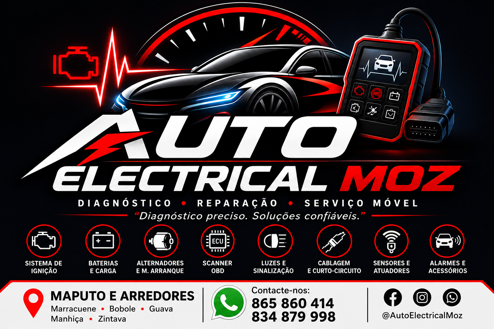

Diagnóstico elétrico
Localização de falhas, perdas de alimentação, massas e curtos-circuitos.
DIAGNÓSTICO • REPARAÇÃO • SERVIÇO MÓVEL
Electricidade e diagnóstico automóvel com atendimento em Maputo e arredores.

Soluções para falhas elétricas, arranque, carga e diagnóstico.
Localização de falhas, perdas de alimentação, massas e curtos-circuitos.
Leitura e interpretação de códigos de avaria e dados do veículo.
Diagnóstico de motor de arranque, relés, cabos e circuito de partida.
Testes de carga, bateria, alternador, regulador e cablagem.
Diagnóstico de bobinas, velas, cabos, sensores e alimentação.
Faróis, piscas, stop, iluminação interna e comandos.
Reparação de fios, conectores, fusíveis, relés e curtos.
Sensores, alarmes, som, acessórios e instalações elétricas.
A AUTO ELECTRICAL MOZ nasce para oferecer diagnóstico elétrico automóvel com método, transparência e solução prática.
Resolver falhas elétricas com diagnóstico correto e reparações seguras.
Ser uma referência em electricidade auto e diagnóstico móvel em Maputo.
Diagnóstico antes da troca de peças, atendimento móvel e comunicação clara com o cliente.
Maputo e arredores • Marracuene • Bobole • Guava • Manhiça • Zintava
Marcar pelo WhatsApp